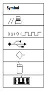

SubTopic 1: Input devices
Qn1. Define computer hardware
Qn2. List any five categories of data input into a computer
Qn3. List any five common input devices
Qn4. Define a keyboard
Qn5. State any four sections of a QWERTY keyboard
Qn6. Differentiate between keyboard and a keypad
Qn7. State any two areas where barcode readers are used today
Qn8. List any five examples of pointing devices
Qn9. .............. is used together with a ................ to input hand drawn images and signature into a computer
Qn10. State any two advantages of a cordless mouse over a corded mouse
View Answers
Qn11. How does a track ball work?
Qn12. Laptops come with a ................that works a pointing device
Qn13. Mention any four devices that have touch screens
Qn14. A track point is normally located between (1)…..., (2)…... and (3)….... Keys on the keyboard
Qn15. List any three gaming devices you know
Qn16. List any five imaging devices you know
Qn17. .......... converts hardcopy to softcopy
Qn18. What is a webcam
Qn19. What is a microphone
Qn20. List any three biometric input devices
View Answers
SubTopic 2: output devices
Qn21. Differentiate between output and output devices
Qn22. List the four the categories of computer output
Qn23. Identify the basic output devices in use in your school today
Qn24. List any five output devices
Qn25. List any three types of display devices
Qn26. .......... monitor is a desktop screen that contains a large sealed glass cathode-ray tube.
Qn27. Define a pixel
Qn28. Define a screen resolution
Qn29. Each dot on a computer screen consists of a ........, a ....., and a ....... phosphor which combine to make up a pixel
View Answers
Qn30. State the two technologies used in a flat panel displays
Qn31. Screen sizes are measured .........
Qn32. Why is a projector necessary in a computer laboratory?
Qn33. Define a printer
Qn34. The speed of a printer is measured in?
Qn35. Briefly explain the two categories of printers
SubTopic 3: Storage Devices
Qn46. Define a port
Qn47. Mention the ports represented by the symbols

Qn48. Mention any five ports on a computer’s system unit
Qn49. Define a connector
Qn50. Differentiate between a storage medium and a storage device
Qn51. List any five examples of storage devices
Qn52. Differentiate between writing and reading as applied in storage
Qn53. Differentiate between primary and secondary storage
View Answers
Qn54. State any one example of a storage medium that is;
SubTopic 4: Processing Devies
Qn73. Define a System Unit
Qn74. List any five hardware components found inside the system unit
Qn75. Define a motherboard
Qn76. Mention any five components found on or attached to the motherboard
Qn77. Define an adapter card
Qn78. List any five adapter cards and their functions
Qn79. Define a bus
Qn80. Differentiate between a data bus and an address bus
Qn81. Define a power supply
Qn82. Define a heat sink
Qn83. Define a CPU
View Answers
Qn84. Briefly explain the three components of the CPU
Qn85. For every instruction, the control unit repeats a set of four basic steps called the ..............
Qn86. Mention the four machine cycle steps
Qn87. Define a system clock
Qn88. Define the clock speed and state its units
Qn89. State the two leading manufacturers of PC processor chips
Qn90. High-performance desktop PCs today use a processor in the ………… core family.
Qn91. Less expensive, basic personal computers today use a brand of Intel processor in the Pentium or ……………. family.
Qn92. The ………….. and Itanium families of processors are ideal for work stations and low-end servers
Qn93. What is a multicore processor chip?
Qn94. List any five examples of processor by;